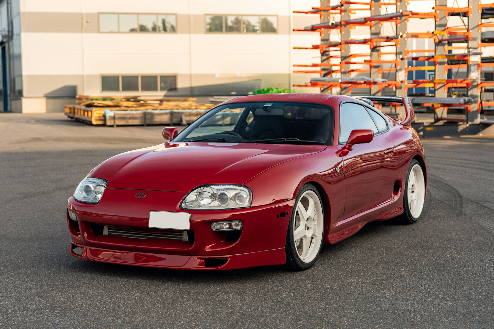

Supra Mk4 (2JZ-GTE)

A negyedik generációs Toyota Supra (MK4) nem csupán egy lenyűgöző formatervű sportautó, hanem a globális tuningkultúra megkoronázott királya, melynek tekintélyét a géptető alatt üvöltő, legendás 2JZ-GTE motor adja. Ez az ikerturbós, soros hathengeres erőforrás egy igazi mérnöki csoda: elpusztíthatatlan, masszív öntöttvas blokkjának köszönhetően az amúgy is tekintélyes, közel 330 lóerős gyári teljesítmény csupán a kiindulási alapot jelenti. A 2JZ valódi hírnevét annak köszönheti, hogy a gyári belső alkatrészek is nevetve viselik el a brutális töltőnyomást, így az autó megbízhatóan húzható akár 1000 lóerő fölé is, anélkül, hogy a motor darabjaira hullana. Amikor a turbók felpörögnek, és a 2JZ jellegzetes, agresszíven süvítő hangja betölti a levegőt, az a nyers, aszfaltszaggató erő olyan szimfóniája, amely a mai napig tiszteletet parancsol minden versenypályán és utcán.